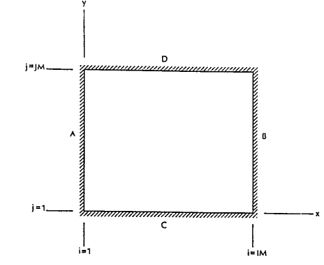

Incompressible N-S Equation in 2D
The Navier-Stokes equations for incompressible flow can be written as
\[\begin{split}\begin{array}{l}
\nabla\cdot\mathbf{u}=0\\
\cfrac{\partial \mathbf{u}}{\partial t}+\mathbf{u}\cdot\nabla\mathbf{u}=-\cfrac{1}{\rho}\nabla p+\nu\nabla^{2}\mathbf{u}
\end{array}\end{split}\]
where \(\mathbf{u}=[u,v]^{T}\) is the velocity vector, \(t\) is the time, \(\rho\) is the density,
\(p\) is pressure, and \(\nu\) is the kinematic viscosity. By taking curl of above equation and using \(\nabla\times\mathbf{u}=\mathbf{\omega}\) ,
we can derive the vorticity equation
\[\nabla\times\cfrac{\partial \mathbf{u}}{\partial t}+\nabla\times(\mathbf{u}\cdot\nabla\mathbf{u})=-\nabla\times(\cfrac{1}{\rho}\nabla p)+\nabla\times(\nu\nabla^{2}\mathbf{u})\]
The first term on the left side and last term on the right side becomes
\[\nabla\times\cfrac{\partial \mathbf{u}}{\partial t}=\cfrac{\partial \mathbf{\omega}}{\partial t};\quad\nabla\times(\nu\nabla^{2}\mathbf{u})=\nu\nabla^{2}\mathbf{\omega}\]
Applying the identity \(\nabla\times\nabla f=0\) for any scalar function \(f\) , the pressure term vanishes for the incompressible flow since the density is constant
\[\begin{split}\begin{array}{l}
\nabla\times(\cfrac{1}{\rho}\nabla p)=\nabla\times\bigg(\nabla \bigg(\cfrac{p}{\rho}\bigg)\bigg)\\
\nabla\times\bigg(\nabla \bigg(\cfrac{p}{\rho}\bigg)\bigg)=\nabla\times\nabla\bigg(\cfrac{p}{\rho}\bigg)=0\\
\end{array}\end{split}\]
The \(\nu\nabla^{2}\mathbf{u}\) can be writtern as
\[\mathbf{u}\cdot\nabla\mathbf{u}=\cfrac{1}{2} \nabla(\mathbf{u}\cdot\mathbf{u})-\mathbf{u}\times(\nabla\times\mathbf{u})
=\nabla(\cfrac{\mathbf{u}^{2}}{2} )-\mathbf{u}\times\boldsymbol{\omega}\]
where \(\mathbf{u}^{2}=\mathbf{u}\cdot\mathbf{u}\)
The \(\nabla\times(\nu\nabla^{2}\mathbf{u})\) can be writtern as
\[\begin{split}\begin{array}{l}
\nabla\times(\mathbf{u}\cdot\nabla\mathbf{u})=\nabla\times\bigg(\nabla\bigg(\cfrac{\mathbf{u}^{2}}{2}\bigg)\bigg)-\nabla\times\mathbf{u}\times\boldsymbol{\omega}\\
\nabla\times\nabla\bigg(\cfrac{\mathbf{u}^{2}}{2}\bigg)=0\\
\nabla\times(\mathbf{u}\cdot\nabla\mathbf{u})=-\nabla\times\mathbf{u}\times\boldsymbol{\omega}=\nabla\times\boldsymbol{\omega}\times\mathbf{u}\\
\end{array}\end{split}\]
\[\nabla\times(\mathbf{v}_{1}\times\mathbf{v}_{2})
=\mathbf{v}_{1}(\nabla\cdot\mathbf{v}_{2})-\mathbf{v}_{2}(\nabla\cdot\mathbf{v}_{1})
+(\mathbf{v}_{2}\cdot\nabla)\mathbf{v}_{1}-(\mathbf{v}_{1}\cdot\nabla)\mathbf{v}_{2}\]
\[\begin{split}\nabla\times(\mathbf{u}\cdot\nabla\mathbf{u})=\nabla\times\boldsymbol{\omega}\times\mathbf{u}
=\boldsymbol{\omega}(\nabla\cdot\mathbf{u})-\mathbf{u}(\nabla\cdot\boldsymbol{\omega})
+(\mathbf{u}\cdot\nabla)\boldsymbol{\omega}-(\boldsymbol{\omega}\cdot\nabla)\mathbf{u}\\\end{split}\]
\[\begin{split}\begin{array}{l}
\nabla\cdot(\nabla\times\mathbf{a})=0\\
\boldsymbol{\omega}=\nabla\times\mathbf{u}\\
\nabla\cdot\boldsymbol{\omega}=\nabla\cdot(\nabla\times\mathbf{u})=0\\
\end{array}\end{split}\]
incompressible flow
\[\nabla\cdot\mathbf{u}=0\]
and the vortex stretching term vanishes in two-dimensional flows
\[(\omega_{x}=0,\omega_{y}=0,\omega_{z}=\omega)\]
\[\begin{split}\begin{array}{l}
(\boldsymbol{\omega}\cdot\nabla)\mathbf{u}=\omega_{x}\cfrac{\partial u}{\partial x}+\omega_{y}\cfrac{\partial v}{\partial y}+\omega_{z}\cfrac{\partial w}{\partial z} \\
(\boldsymbol{\omega}\cdot\nabla)\mathbf{u}=0\cfrac{\partial u}{\partial x}+0\cfrac{\partial v}{\partial y}+\omega_{z}0=0 \\
\end{array}\end{split}\]
We can further use below relations for two-dimensional flows
\[(\mathbf{u}\cdot\nabla)\boldsymbol{\omega}=u\cfrac{\partial \omega}{\partial x}+ v\cfrac{\partial \omega}{\partial y}\]
and introducing a streamfunction with the following definitions:
\[u=\cfrac{\partial \psi}{\partial y}, \text{ and } v=-\cfrac{\partial \psi}{\partial x}\]
then the advection term becomes (i.e., sometimes called nonlinear Jacobian)
\[\begin{split}(\mathbf{u}\cdot\nabla)\boldsymbol{\omega}=\cfrac{\partial \psi}{\partial y}\cfrac{\partial \omega}{\partial x}-\cfrac{\partial \psi}{\partial x}\cfrac{\partial \omega}{\partial y}\\\end{split}\]
The vorticity equation for two-dimensional incompressible flow becomes
\[\begin{split}\cfrac{\partial \omega}{\partial t}+\cfrac{\partial \psi}{\partial y}\cfrac{\partial \omega}{\partial x}-\cfrac{\partial \psi}{\partial x}\cfrac{\partial \omega}{\partial y}
=\nu\bigg(\cfrac{\partial ^{2}\omega}{\partial x^{2}}+\cfrac{\partial ^{2}\omega}{\partial y^{2}} \bigg)\\\end{split}\]
The kinematic relationship between streamfunction and vorticity is given by a Poisson equation
\[\cfrac{\partial ^{2}\psi}{\partial x^{2}}+\cfrac{\partial ^{2}\psi}{\partial y^{2}}=-\omega\]
The vorticity-streamfunction formulation has several advantages over solving original equations.
It eliminates the pressure term from the momentum equation and hence, there is no odd-even coupling between the pressure and velocity. We can use vorticity-streamfunction formulation directly on the collocated grid instead of using staggered grid. The number of equations to be solved in the vorticity-streamfunction formulation is also less than primitive variable formulation as it satisfies the divergence-free condition.
We use third-order Runge-Kutta numerical scheme for the time integration.
The right hand side terms in Equation is discretized using the second-order central difference scheme similar to the diffusion term in heat equation.
The nonlinear terms in Equation is defined as the Jacobian
\[\begin{split}J(\omega,\psi)=\cfrac{\partial \psi}{\partial y}\cfrac{\partial \omega}{\partial x}-\cfrac{\partial \psi}{\partial x}\cfrac{\partial \omega}{\partial y}\\\end{split}\]
This numerical scheme has conservation of energy, enstrophy and skew symmetry property and avoids computational instabilities arising from nonlinear interactions.
The second-order Arakawa scheme is given below
\[J(\omega,\psi)=\cfrac{J_{1}(\omega,\psi)+J_{2}(\omega,\psi)+J_{3}(\omega,\psi)}{3}\]
where the discrete parts of the Jacobian are
\[\begin{split}\begin{array}{l}
J_{1}(\omega,\psi)=\cfrac{1}{4\Delta x\Delta y}\bigg\{(\omega_{i+1,j}-\omega_{i-1,j})(\psi_{i,j+1}-\psi_{i,j-1})
-(\omega_{i,j+1}-\omega_{i,j-1})(\psi_{i+1,j}-\psi_{i-1,j})\bigg\}\\
J_{2}(\omega,\psi)=\cfrac{1}{4\Delta x\Delta y}\bigg\{\\
+\omega_{i+1,j}(\psi_{i+1,j+1}-\psi_{i+1,j-1})\\
-\omega_{i-1,j}(\psi_{i-1,j+1}-\psi_{i-1,j-1})\\
-\omega_{i,j+1}(\psi_{i+1,j+1}-\psi_{i-1,j+1})\\
+\omega_{i,j-1}(\psi_{i+1,j-1}-\psi_{i-1,j-1})\bigg\}\\
J_{3}(\omega,\psi)=\cfrac{1}{4\Delta x\Delta y}\bigg\{\\
+\omega_{i+1,j+1}(\psi_{i,j+1}-\psi_{i+1,j})\\
-\omega_{i-1,j-1}(\psi_{i-1,j}-\psi_{i,j-1})\\
-\omega_{i-1,j+1}(\psi_{i,j+1}-\psi_{i-1,j})\\
+\omega_{i+1,j-1}(\psi_{i+1,j}-\psi_{i,j-1})
\bigg\}\\
\end{array}\end{split}\]
Body Surface
A solid surface can be considered as stream line and, therefore, the stream function is constant and its value may be assigned arbitrarily.
As mentioned previously, boundary conditions for the vorticity do not exist. Therefore, a set of boundary conditions must be constructed.
The procedure involves the stream function equation along Taylor series expansion of stream function. As a result,
a different formulation with various orders of approximation can be derived. At this point, the construction of a first-order expression is illustrated.
Subsequently, a second-order relation is provided. For illustration purposes, assume non-porous and stationary surfaces and a rectangular domain.

The rectangular cavity with fixed surfaces.
The expression for the vorticity to be applied at boundary A is determined initially and, subsequently, the result extended to the other boundaries
at B, C, and D.
\[u=\cfrac{\partial \psi}{\partial y},\quad v=-\cfrac{\partial \psi}{\partial x}\]
\[\cfrac{\partial ^{2}\psi}{\partial x^{2}}+\cfrac{\partial ^{2}\psi}{\partial y^{2}}=-\omega\]
\[\bigg(\cfrac{\partial ^{2}\psi}{\partial x^{2}}+\cfrac{\partial ^{2}\psi}{\partial y^{2}}\bigg)_{1,j}=-\omega_{1,j}\]
Along the surface, the stream function is constant, and its value may be specified arbitrarily; for example, \(\psi_{1,j}=\psi_{1}\) . Then along A,
\[\begin{split}\begin{array}{l}
u=\cfrac{\partial \psi}{\partial y}\\
u_{1,j}=\cfrac{\partial \psi}{\partial y}\bigg|_{1,j}=0\\
\cfrac{\partial ^{2}\psi}{\partial y^{2}}\bigg|_{1,j}=0\\
\end{array}\end{split}\]
\[\bigg(\cfrac{\partial ^{2}\psi}{\partial x^{2}}\bigg)_{1,j}=-\omega_{1,j}\]
To obtain an expression for the second-order derivative in the equation above, consider the Taylor series expansion
\[\psi_{2,j}=\psi_{1,j}+\cfrac{\partial \psi}{\partial x} \bigg|_{1,j}\Delta x
+\cfrac{\partial ^{2}\psi}{\partial x^{2}} \bigg|_{1,j}\cfrac{(\Delta x)^{2}}{2} +\cdots\]
Along boundary A
\[\begin{split}v_{1,j}=-\cfrac{\partial \psi}{\partial x}\bigg|_{1,j}=0\\\end{split}\]
Therefore,
\[\psi_{2,j}=\psi_{1,j}
+\cfrac{\partial ^{2}\psi}{\partial x^{2}} \bigg|_{1,j}\cfrac{(\Delta x)^{2}}{2} +O(\Delta x)^{3}\]
from which
\[\begin{split}\cfrac{\partial ^{2}\psi}{\partial x^{2}} \bigg|_{1,j}=\cfrac{2(\psi_{2,j}-\psi_{1,j})}{(\Delta x)^{2}}
+O(\Delta x)\\\end{split}\]
Substitution the above equation into \(\bigg(\cfrac{\partial ^{2}\psi}{\partial x^{2}}\bigg)_{1,j}=-\omega_{1,j}\) yields
\[\omega_{1,j}=\cfrac{2(\psi_{1,j}-\psi_{2,j})}{(\Delta x)^{2}}\]
A Similar procedure is used to derive the boundary conditions at boundaries B, C, and D. The appropriate expressions are, respectively,
Along boundary B
\[\omega_{IM,j}=-\bigg(\cfrac{\partial ^{2}\psi}{\partial x^{2}}\bigg)_{IM,j}=\cfrac{2(\psi_{IM,j}-\psi_{IM-1,j})}{(\Delta x)^{2}}\]
Along boundary C
\[\omega_{i,1}=-\bigg(\cfrac{\partial ^{2}\psi}{\partial y^{2}}\bigg)_{i,1}=\cfrac{2(\psi_{i,1}-\psi_{i,2})}{(\Delta y)^{2}}\]
Along boundary D
\[\omega_{i,JM}=-\bigg(\cfrac{\partial ^{2}\psi}{\partial y^{2}}\bigg)_{i,JM}=\cfrac{2(\psi_{i,JM}-\psi_{i,JM-1})}{(\Delta y)^{2}}\]
Now suppose a boundary is moving with some specified velocity. For example, assume that the upper surface is moving to the right with a
constant velocity \(u_{0}\) . Following the procedure described previously, the Taylor series expansion yields
\[\psi_{i,j-1}=\psi_{i,j}
-\cfrac{\partial \psi}{\partial y} \bigg|_{i,j}\Delta y
+\cfrac{\partial ^{2}\psi}{\partial y^{2}} \bigg|_{i,j}\cfrac{(\Delta y)^{2}}{2}+\cdots\]
or
\[\psi_{i,JM-1}=\psi_{i,JM}
-u_{0}\Delta y -\omega_{i,JM}\cfrac{(\Delta y)^{2}}{2}\]
from which
\[\omega_{i,JM}=\cfrac{2(\psi_{i,JM}-\psi_{i,JM-1})}{\Delta y^{2}} -
\cfrac{2u_{0}}{\Delta y}\]
Left and Right boundary
\[\begin{split}\begin{array}{l}
\omega_{1,j}=\cfrac{2(\psi_{1,j}-\psi_{2,j})}{(\Delta x)^{2}}+O(\Delta x)\\
\omega_{IM,j}=\cfrac{2(\psi_{IM,j}-\psi_{IM-1,j})}{(\Delta x)^{2}}+O(\Delta x)\\
\omega_{1,j}=\cfrac{2(0-\psi_{2,j})}{(\Delta x)^{2}}+O(\Delta x)\\
\omega_{IM,j}=\cfrac{2(0-\psi_{IM-1,j})}{(\Delta x)^{2}}+O(\Delta x)\\
\omega_{1,j}=\cfrac{-2\psi_{2,j}}{(\Delta x)^{2}}+O(\Delta x)\\
\omega_{IM,j}=\cfrac{-2\psi_{IM-1,j}}{(\Delta x)^{2}}+O(\Delta x)\\
\end{array}\end{split}\]
Bottom and Top boundary
\[\begin{split}\begin{array}{l}
\omega_{i,1}=\cfrac{2(\psi_{i,1}-\psi_{i,2})}{(\Delta y)^{2}}+O(\Delta x)\\
\omega_{i,JM}=\cfrac{2(\psi_{i,JM}-\psi_{i,JM-1})}{(\Delta y)^{2}}-\cfrac{2u_{0}}{\Delta y}+O(\Delta x)\\
\omega_{i,1}=\cfrac{2(0-\psi_{i,2})}{(\Delta y)^{2}}+O(\Delta x)\\
\omega_{i,JM}=\cfrac{2(0-\psi_{i,JM-1})}{(\Delta y)^{2}}-\cfrac{2u_{0}}{\Delta y}+O(\Delta x)\\
\omega_{i,1}=\cfrac{-2\psi_{i,2}}{(\Delta y)^{2}}+O(\Delta x)\\
\omega_{i,JM}=\cfrac{-2\psi_{i,JM-1}}{(\Delta y)^{2}}-\cfrac{2u_{0}}{\Delta y}+O(\Delta x)\\
\end{array}\end{split}\]
Second-order
\[\begin{split}\begin{array}{l}
\psi_{2,j}=\psi_{1,j}+\cfrac{\partial \psi}{\partial x} \bigg|_{1,j}\Delta x
+\cfrac{\partial ^{2}\psi}{\partial x^{2}} \bigg|_{1,j}\cfrac{(\Delta x)^{2}}{2}
+\cfrac{\partial ^{3}\psi}{\partial x^{3}} \bigg|_{1,j}\cfrac{(\Delta x)^{3}}{6} +O(\Delta x)^{4}\\
\psi_{3,j}=\psi_{1,j}+\cfrac{\partial \psi}{\partial x} \bigg|_{1,j}2\Delta x
+\cfrac{\partial ^{2}\psi}{\partial x^{2}} \bigg|_{1,j}\cfrac{(2\Delta x)^{2}}{2}
+\cfrac{\partial ^{3}\psi}{\partial x^{3}} \bigg|_{1,j}\cfrac{(2\Delta x)^{3}}{6} +O(\Delta x)^{4}
\end{array}\end{split}\]
\[\begin{split}\begin{array}{l}
8\psi_{2,j}=8\psi_{1,j}
+\cfrac{\partial ^{2}\psi}{\partial x^{2}} \bigg|_{1,j}8\cfrac{(\Delta x)^{2}}{2}
+\cfrac{\partial ^{3}\psi}{\partial x^{3}} \bigg|_{1,j}8\cfrac{(\Delta x)^{3}}{6} +O(\Delta x)^{4}\\
\psi_{3,j}=\psi_{1,j}
+\cfrac{\partial ^{2}\psi}{\partial x^{2}} \bigg|_{1,j}\cfrac{(2\Delta x)^{2}}{2}
+\cfrac{\partial ^{3}\psi}{\partial x^{3}} \bigg|_{1,j}\cfrac{(2\Delta x)^{3}}{6} +O(\Delta x)^{4}
\end{array}\end{split}\]
\[\begin{split}\begin{array}{l}
8\psi_{2,j}-\psi_{3,j}=7\psi_{1,j}+\cfrac{\partial ^{2}\psi}{\partial x^{2}} \bigg|_{1,j}2(\Delta x)^{2}+O(\Delta x)^{4}\\
8\psi_{2,j}-\psi_{3,j}=7\psi_{1,j}-\omega_{1,j}2(\Delta x)^{2}+O(\Delta x)^{4}\\
\omega_{1,j}=\cfrac{\psi_{3,j}-8\psi_{2,j}+7\psi_{1,j}}{2(\Delta x)^{2}}+O(\Delta x)^{2}\\
\end{array}\end{split}\]
i=IM
\[\begin{split}\begin{array}{l}
\psi_{i-1,j}=\psi_{i,j}+\cfrac{\partial \psi}{\partial x} \bigg|_{i,j}(-\Delta x)
+\cfrac{\partial ^{2}\psi}{\partial x^{2}} \bigg|_{i,j}\cfrac{(-\Delta x)^{2}}{2}
+\cfrac{\partial ^{3}\psi}{\partial x^{3}} \bigg|_{i,j}\cfrac{(-\Delta x)^{3}}{6} +O(\Delta x)^{4}\\
\psi_{i-2,j}=\psi_{i,j}+\cfrac{\partial \psi}{\partial x} \bigg|_{i,j}(-2\Delta x)
+\cfrac{\partial ^{2}\psi}{\partial x^{2}} \bigg|_{i,j}\cfrac{(-2\Delta x)^{2}}{2}
+\cfrac{\partial ^{3}\psi}{\partial x^{3}} \bigg|_{i,j}\cfrac{(-2\Delta x)^{3}}{6} +O(\Delta x)^{4}
\end{array}\end{split}\]
\[\begin{split}\begin{array}{l}
8\psi_{i-1,j}=8\psi_{i,j}+\cfrac{\partial \psi}{\partial x} \bigg|_{i,j}(-8\Delta x)
+\cfrac{\partial ^{2}\psi}{\partial x^{2}} \bigg|_{i,j}8\cfrac{(-\Delta x)^{2}}{2}
+\cfrac{\partial ^{3}\psi}{\partial x^{3}} \bigg|_{i,j}8\cfrac{(-\Delta x)^{3}}{6} +O(\Delta x)^{4}\\
\psi_{i-2,j}=\psi_{i,j}+\cfrac{\partial \psi}{\partial x} \bigg|_{i,j}(-2\Delta x)
+\cfrac{\partial ^{2}\psi}{\partial x^{2}} \bigg|_{i,j}\cfrac{(-2\Delta x)^{2}}{2}
+\cfrac{\partial ^{3}\psi}{\partial x^{3}} \bigg|_{i,j}\cfrac{(-2\Delta x)^{3}}{6} +O(\Delta x)^{4}\\
8\psi_{i-1,j}-\psi_{i-2,j}=7\psi_{i,j}+\cfrac{\partial \psi}{\partial x} \bigg|_{i,j}(-6\Delta x)
+\cfrac{\partial ^{2}\psi}{\partial x^{2}} \bigg|_{i,j}2(\Delta x)^{2}
+O(\Delta x)^{4}\\
\end{array}\end{split}\]
\[\begin{split}\begin{array}{l}
0=\cfrac{7\psi_{i,j}-8\psi_{i-1,j}+\psi_{i-2,j}}{2(\Delta x)^{2}} +\cfrac{\partial \psi}{\partial x} \bigg|_{i,j}\cfrac{-6\Delta x}{2(\Delta x)^{2}}
+\cfrac{\partial ^{2}\psi}{\partial x^{2}} \bigg|_{i,j}
+O(\Delta x)^{2}\\
0=\cfrac{7\psi_{IM,j}-8\psi_{IM-1,j}+\psi_{IM-2,j}}{2(\Delta x)^{2}} +\cfrac{\partial \psi}{\partial x} \bigg|_{IM,j}\cfrac{-3}{\Delta x}
+\cfrac{\partial ^{2}\psi}{\partial x^{2}} \bigg|_{IM,j}
+O(\Delta x)^{2}\\
0=\cfrac{7\psi_{IM,j}-8\psi_{IM-1,j}+\psi_{IM-2,j}}{2(\Delta x)^{2}} +\cfrac{\partial \psi}{\partial x} \bigg|_{IM,j}\cfrac{-3}{\Delta x}
-\omega_{IM,j}+O(\Delta x)^{2}\\
\end{array}\end{split}\]
\[\begin{split}\begin{array}{l}
\omega_{IM,j}=\cfrac{7\psi_{IM,j}-8\psi_{IM-1,j}+\psi_{IM-2,j}}{2(\Delta x)^{2}}
+O(\Delta x)^{2}\\
\end{array}\end{split}\]
Compare the difference between the two formulas
\[\begin{split}\begin{array}{l}
\omega_{1,j}=\cfrac{\psi_{3,j}-8\psi_{2,j}+7\psi_{1,j}}{2(\Delta x)^{2}}+O(\Delta x)^{2}\\
\omega_{IM,j}=\cfrac{7\psi_{IM,j}-8\psi_{IM-1,j}+\psi_{IM-2,j}}{2(\Delta x)^{2}}
+O(\Delta x)^{2}\\
\end{array}\end{split}\]
\[\begin{split}\begin{array}{l}
\omega_{1,j}=\cfrac{\psi_{3,j}-8\psi_{2,j}+7\times0}{2(\Delta x)^{2}}+O(\Delta x)^{2}\\
\omega_{IM,j}=\cfrac{7\times0-8\psi_{IM-1,j}+\psi_{IM-2,j}}{2(\Delta x)^{2}}
+O(\Delta x)^{2}\\
\omega_{1,j}=\cfrac{\psi_{3,j}-8\psi_{2,j}}{2(\Delta x)^{2}}+O(\Delta x)^{2}\\
\omega_{IM,j}=\cfrac{-8\psi_{IM-1,j}+\psi_{IM-2,j}}{2(\Delta x)^{2}}
+O(\Delta x)^{2}\\
\end{array}\end{split}\]
\[\begin{split}\begin{array}{l}
\omega_{1,j}=\cfrac{\cfrac{1}{2} \psi_{3,j}-4\psi_{2,j}}{(\Delta x)^{2}}+O(\Delta x)^{2}\\
\omega_{IM,j}=\cfrac{-4\psi_{IM-1,j}+\cfrac{1}{2}\psi_{IM-2,j}}{(\Delta x)^{2}}
+O(\Delta x)^{2}\\
\end{array}\end{split}\]
For a moving boundary with a constant velocity of \(u_{0}\) at \(j=JM\) , one has
\[\begin{split}\begin{array}{l}
\psi_{i,j-1}=\psi_{i,j}
-\cfrac{\partial \psi}{\partial y} \bigg|_{i,j}\Delta y
+\cfrac{\partial ^{2}\psi}{\partial y^{2}} \bigg|_{i,j}\cfrac{(-\Delta y)^{2}}{2}
+\cfrac{\partial ^{3}\psi}{\partial y^{3}} \bigg|_{i,j}\cfrac{(-\Delta y)^{3}}{6}+O(\Delta y)^{4}\\
\psi_{i,j-2}=\psi_{i,j}
-\cfrac{\partial \psi}{\partial y} \bigg|_{i,j}2\Delta y
+\cfrac{\partial ^{2}\psi}{\partial y^{2}} \bigg|_{i,j}\cfrac{(-2\Delta y)^{2}}{2}
+\cfrac{\partial ^{3}\psi}{\partial y^{3}} \bigg|_{i,j}\cfrac{(-2\Delta y)^{3}}{6}+O(\Delta y)^{4}\\
\end{array}\end{split}\]
\[\begin{split}\begin{array}{l}
8\psi_{i,j-1}=8\psi_{i,j}
-\cfrac{\partial \psi}{\partial y} \bigg|_{i,j}8\Delta y
+\cfrac{\partial ^{2}\psi}{\partial y^{2}} \bigg|_{i,j}8\cfrac{(-\Delta y)^{2}}{2}
+\cfrac{\partial ^{3}\psi}{\partial y^{3}} \bigg|_{i,j}8\cfrac{(-\Delta y)^{3}}{6}+O(\Delta y)^{4}\\
\psi_{i,j-2}=\psi_{i,j}
-\cfrac{\partial \psi}{\partial y} \bigg|_{i,j}2\Delta y
+\cfrac{\partial ^{2}\psi}{\partial y^{2}} \bigg|_{i,j}\cfrac{(-2\Delta y)^{2}}{2}
+\cfrac{\partial ^{3}\psi}{\partial y^{3}} \bigg|_{i,j}\cfrac{(-2\Delta y)^{3}}{6}+O(\Delta y)^{4}\\
8\psi_{i,j-1}-\psi_{i,j-2}=7\psi_{i,j}
-\cfrac{\partial \psi}{\partial y} \bigg|_{i,j}6\Delta y
+\cfrac{\partial ^{2}\psi}{\partial y^{2}} \bigg|_{i,j}2(\Delta y)^{2}
+O(\Delta y)^{4}\\
\end{array}\end{split}\]
\[\begin{split}\begin{array}{l}
u=\cfrac{\partial \psi}{\partial y},u_{0}=\cfrac{\partial \psi}{\partial y}\bigg|_{i,JM}\\
8\psi_{i,j-1}-\psi_{i,j-2}=7\psi_{i,j}
-\cfrac{\partial \psi}{\partial y} \bigg|_{i,j}6\Delta y
+\cfrac{\partial ^{2}\psi}{\partial y^{2}} \bigg|_{i,j}2(\Delta y)^{2}
+O(\Delta y)^{4}\\
\cfrac{8\psi_{i,j-1}-\psi_{i,j-2}-7\psi_{i,j}}{2(\Delta y)^{2}} =
-\cfrac{\partial \psi}{\partial y} \bigg|_{i,j}\cfrac{6\Delta y}{2(\Delta y)^{2}}
+\cfrac{\partial ^{2}\psi}{\partial y^{2}} \bigg|_{i,j}
+O(\Delta y)^{2}\\
\cfrac{8\psi_{i,j-1}-\psi_{i,j-2}-7\psi_{i,j}}{2(\Delta y)^{2}} =
-\cfrac{\partial \psi}{\partial y} \bigg|_{i,j}\cfrac{3}{\Delta y}
+\cfrac{\partial ^{2}\psi}{\partial y^{2}} \bigg|_{i,j}
+O(\Delta y)^{2}\\
\end{array}\end{split}\]
\[\begin{split}\begin{array}{l}
u=\cfrac{\partial \psi}{\partial y},u_{0}=\cfrac{\partial \psi}{\partial y}\bigg|_{i,JM}\\
\omega_{i,j}=-\cfrac{8\psi_{i,j-1}-\psi_{i,j-2}-7\psi_{i,j}}{2(\Delta y)^{2}}
-u_{0}\cfrac{3}{\Delta y} \\
\omega_{i,JM}=-\cfrac{8\psi_{i,JM-1}-\psi_{i,JM-2}-7\psi_{i,JM}}{2(\Delta y)^{2}}
-u_{0}\cfrac{3}{\Delta y}
+O(\Delta y)^{2}\\
\omega_{i,JM}=\cfrac{\psi_{i,JM-2}-8\psi_{i,JM-1}+7\psi_{i,JM}}{2(\Delta y)^{2}}
-u_{0}\cfrac{3}{\Delta y}
+O(\Delta y)^{2}\\
\end{array}\end{split}\]
For a moving boundary with a constant velocity of \(u_{1}\) at \(j=1\) , one has
\[\begin{split}\begin{array}{l}
\psi_{i,j+1}=\psi_{i,j}
+\cfrac{\partial \psi}{\partial y} \bigg|_{i,j}\Delta y
+\cfrac{\partial ^{2}\psi}{\partial y^{2}} \bigg|_{i,j}\cfrac{(\Delta y)^{2}}{2}
+\cfrac{\partial ^{3}\psi}{\partial y^{3}} \bigg|_{i,j}\cfrac{(\Delta y)^{3}}{6}+O(\Delta y)^{4}\\
\psi_{i,j+2}=\psi_{i,j}
+\cfrac{\partial \psi}{\partial y} \bigg|_{i,j}2\Delta y
+\cfrac{\partial ^{2}\psi}{\partial y^{2}} \bigg|_{i,j}\cfrac{(2\Delta y)^{2}}{2}
+\cfrac{\partial ^{3}\psi}{\partial y^{3}} \bigg|_{i,j}\cfrac{(2\Delta y)^{3}}{6}+O(\Delta y)^{4}\\
\end{array}\end{split}\]
\[\begin{split}\begin{array}{l}
8\psi_{i,j+1}=8\psi_{i,j}
+\cfrac{\partial \psi}{\partial y} \bigg|_{i,j}8\Delta y
+\cfrac{\partial ^{2}\psi}{\partial y^{2}} \bigg|_{i,j}8\cfrac{(\Delta y)^{2}}{2}
+\cfrac{\partial ^{3}\psi}{\partial y^{3}} \bigg|_{i,j}8\cfrac{(\Delta y)^{3}}{6}+O(\Delta y)^{4}\\
\psi_{i,j+2}=\psi_{i,j}
+\cfrac{\partial \psi}{\partial y} \bigg|_{i,j}2\Delta y
+\cfrac{\partial ^{2}\psi}{\partial y^{2}} \bigg|_{i,j}\cfrac{(2\Delta y)^{2}}{2}
+\cfrac{\partial ^{3}\psi}{\partial y^{3}} \bigg|_{i,j}\cfrac{(2\Delta y)^{3}}{6}+O(\Delta y)^{4}\\
8\psi_{i,j+1}-\psi_{i,j+2}=7\psi_{i,j}
+\cfrac{\partial \psi}{\partial y} \bigg|_{i,j}6\Delta y
+\cfrac{\partial ^{2}\psi}{\partial y^{2}} \bigg|_{i,j}2(\Delta y)^{2}
+O(\Delta y)^{4}\\
\end{array}\end{split}\]
\[\begin{split}\begin{array}{l}
0=\cfrac{7\psi_{i,j}-8\psi_{i,j+1}+\psi_{i,j+2}}{2(\Delta y)^{2}}
+\cfrac{\partial \psi}{\partial y} \bigg|_{i,j}\cfrac{3}{\Delta y}
+\cfrac{\partial ^{2}\psi}{\partial y^{2}} \bigg|_{i,j}+O(\Delta y)^{2}\\
\omega_{i,j}=\cfrac{7\psi_{i,j}-8\psi_{i,j+1}+\psi_{i,j+2}}{2(\Delta y)^{2}}
+\cfrac{\partial \psi}{\partial y} \bigg|_{i,j}\cfrac{3}{\Delta y}
+O(\Delta y)^{2}\\
\omega_{i,1}=\cfrac{7\psi_{i,1}-8\psi_{i,2}+\psi_{i,3}}{2(\Delta y)^{2}}
+\cfrac{\partial \psi}{\partial y} \bigg|_{i,1}\cfrac{3}{\Delta y}
+O(\Delta y)^{2}\\
\end{array}\end{split}\]
\[\begin{split}\begin{array}{l}
\omega_{i,1}=\cfrac{7\psi_{i,1}-8\psi_{i,2}+\psi_{i,3}}{2(\Delta y)^{2}}
+\cfrac{\partial \psi}{\partial y} \bigg|_{i,1}\cfrac{3}{\Delta y}
+O(\Delta y)^{2}\\
\omega_{i,1}=\cfrac{7\psi_{i,1}-8\psi_{i,2}+\psi_{i,3}}{2(\Delta y)^{2}}
+u_{1}\cfrac{3}{\Delta y}
+O(\Delta y)^{2}\\
\end{array}\end{split}\]
Bottom and top boundary
\[\begin{split}\begin{array}{l}
u=\cfrac{\partial \psi}{\partial y},u_{0}=\cfrac{\partial \psi}{\partial y}\bigg|_{i,JM}\\
\omega_{i,j}=-\cfrac{8\psi_{i,j-1}-\psi_{i,j-2}-7\psi_{i,j}}{2(\Delta y)^{2}}
-u_{0}\cfrac{3}{\Delta y} \\
\omega_{i,JM}=-\cfrac{8\psi_{i,JM-1}-\psi_{i,JM-2}-7\psi_{i,JM}}{2(\Delta y)^{2}}
-u_{0}\cfrac{3}{\Delta y}
+O(\Delta y)^{2}\\
\omega_{i,JM}=\cfrac{\psi_{i,JM-2}-8\psi_{i,JM-1}+7\psi_{i,JM}}{2(\Delta y)^{2}}
-u_{0}\cfrac{3}{\Delta y}
+O(\Delta y)^{2}\\
\end{array}\end{split}\]
\[\begin{split}\begin{array}{l}
\omega_{i,JM}=\cfrac{\psi_{i,JM-2}-8\psi_{i,JM-1}+7\times 0}{2(\Delta y)^{2}}
-u_{0}\cfrac{3}{\Delta y} +O(\Delta y)^{2}\\
\omega_{i,1}=\cfrac{7\times 0-8\psi_{i,2}+\psi_{i,3}}{2(\Delta y)^{2}}
+0\cfrac{3}{\Delta y}+O(\Delta y)^{2}\\
\omega_{i,JM}=\cfrac{\psi_{i,JM-2}-8\psi_{i,JM-1}}{2(\Delta y)^{2}}
-u_{0}\cfrac{3}{\Delta y} +O(\Delta y)^{2}\\
\omega_{i,1}=\cfrac{-8\psi_{i,2}+\psi_{i,3}}{2(\Delta y)^{2}}
+O(\Delta y)^{2}\\
\omega_{i,JM}=\cfrac{\cfrac{1}{2} \psi_{i,JM-2}-4\psi_{i,JM-1}}{(\Delta y)^{2}}
-u_{0}\cfrac{3}{\Delta y} +O(\Delta y)^{2}\\
\omega_{i,1}=\cfrac{-4\psi_{i,2}+\cfrac{1}{2}\psi_{i,3}}{(\Delta y)^{2}}
+O(\Delta y)^{2}\\
\end{array}\end{split}\]
{kind=link}